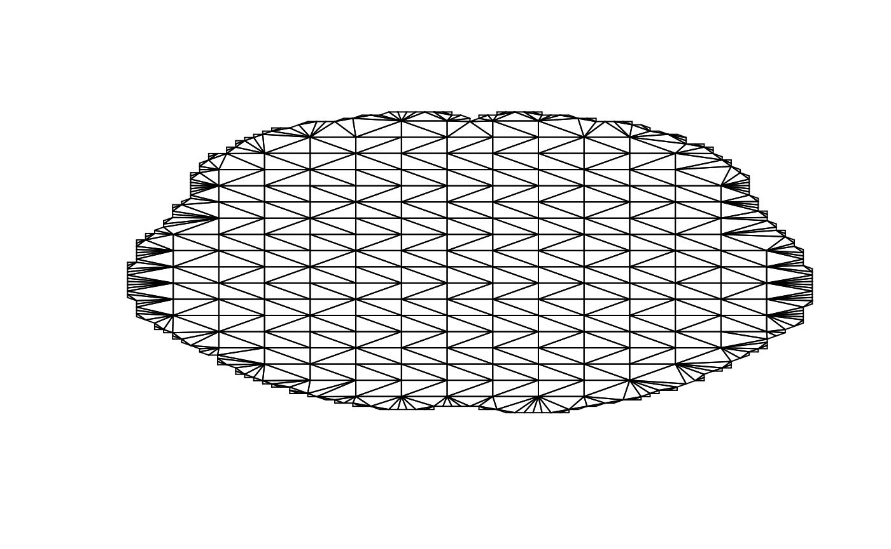

Introduction
This vignette guides you through the initial data preparation steps necessary to use the neuroSCC package for analyzing neuroimaging data with Simultaneous Confidence Corridors (SCC).
1. Loading and Inspecting Neuroimaging Data
We’ll begin by loading a sample PET neuroimaging file included with the package and inspecting its structure.
niftiFile <- system.file("extdata", "syntheticControl1.nii.gz", package = "neuroSCC")
# Load and clean data using neuroCleaner
petData <- neuroCleaner(niftiFile)
# Inspect the data
head(petData)
#> z x y pet
#> 1 1 1 1 0
#> 2 1 1 2 0
#> 3 1 1 3 0
#> 4 1 1 4 0
#> 5 1 1 5 0
#> 6 1 1 6 0
str(petData)
#> 'data.frame': 902629 obs. of 4 variables:
#> $ z : int 1 1 1 1 1 1 1 1 1 1 ...
#> $ x : int 1 1 1 1 1 1 1 1 1 1 ...
#> $ y : int 1 2 3 4 5 6 7 8 9 10 ...
#> $ pet: int 0 0 0 0 0 0 0 0 0 0 ...2. Creating a Database from Multiple PET Images
Now, let’s demonstrate how to create a structured database using multiple PET files available in the package.
# Create database for control subjects
controlPattern <- "^syntheticControl.*\\.nii.gz$"
databaseControls <- databaseCreator(pattern = controlPattern, control = TRUE, quiet = FALSE)
#> Processing CN_number 1 - File 1 of 2
#> Processing CN_number 2 - File 2 of 2
# Inspect the created database
head(databaseControls)
#> CN_number z x y pet
#> 1 1 1 1 1 0
#> 2 1 1 1 2 0
#> 3 1 1 1 3 0
#> 4 1 1 1 4 0
#> 5 1 1 1 5 0
#> 6 1 1 1 6 0
table(databaseControls$CN_number)
#>
#> 1 2
#> 902629 9026293. Creating the Data Matrix
We’ll transform the PET database into a matrix format suitable for SCC analysis.
# Create matrix for Z-slice 35
matrixControls <- matrixCreator(databaseControls, paramZ = 35, quiet = FALSE)
#> Processing Subject 1
#> Processing Subject 2
# Inspect matrix structure
dim(matrixControls)
#> [1] 2 9919
str(matrixControls)
#> num [1:2, 1:9919] 0 0 0 0 0 0 0 0 0 0 ...4. Normalizing the Data Matrix
Normalization adjusts for global intensity differences between subjects.
# Perform mean normalization
normalizedMatrix <- meanNormalization(matrixControls, returnDetails = FALSE)
#>
#> Mean before normalization: 4.345851
#>
#> Normalization completed.5. Extracting Contours for Triangulation
Contours from the neuroimage are used to set boundaries for SCC computations.
# Extract contours from sample data
contours <- neuroContour(niftiFile, paramZ = 35, levels = 0, plotResult = TRUE)
# Check contours structure
length(contours)
#> [1] 1
str(contours[[1]])
#> 'data.frame': 600 obs. of 2 variables:
#> $ x: num 8 9 9 9 9 9 9 9 9 9 ...
#> $ y: num 44 43 43 42 42 41 41 40 40 39 ...6. Conditional Triangulation Setup (optional)
The triangulation step requires the external
Triangulation package, currently not on CRAN. Ensure you
have this package installed. If not, install it using:
remotes::install_github("Triangulation_package_link_here")Conditional example for triangulation:
if (!requireNamespace("Triangulation", quietly = TRUE)) {
message("Triangulation package is not installed. Install it from the provided link to continue.")
} else {
# Perform triangulation with the first contour
mesh <- mesh <- Triangulation::TriMesh(n = 15, contours[[1]])
# Inspect mesh
print(mesh[["V"]][1:10, ])
print(mesh[["Tr"]][1:10, ])
}
#> Warning in tri.mesh(X, Y): success: collinearities reduced through jitter
#> Warning in tri.mesh(X, Y): dataset started with 3 colinear points, jitter
#> added!
#> X Y
#> [1,] 13.06667 38.40000
#> [2,] 13.06667 43.46667
#> [3,] 13.06667 48.53333
#> [4,] 13.06667 53.60000
#> [5,] 13.06667 58.66667
#> [6,] 13.06667 63.73333
#> [7,] 18.13333 28.26667
#> [8,] 18.13333 33.33333
#> [9,] 18.13333 38.40000
#> [10,] 18.13333 43.46667
#> node1 node2 node3
#> [1,] 1 205 206
#> [2,] 1 206 207
#> [3,] 1 207 209
#> [4,] 1 209 210
#> [5,] 1 210 213
#> [6,] 1 213 215
#> [7,] 1 215 8
#> [8,] 1 8 9
#> [9,] 1 9 10
#> [10,] 1 10 2What’s Next?
You’re now ready to perform Simultaneous Confidence Corridor analyses:
- Single-group SCC analysis (see
one_group_sccvignette) - Two-group comparison SCC (see
two_group_comparisonvignette) - Single patient vs. group analysis (see
one_vs_groupvignette)
Feel free to explore these vignettes to continue your analysis journey with neuroSCC.